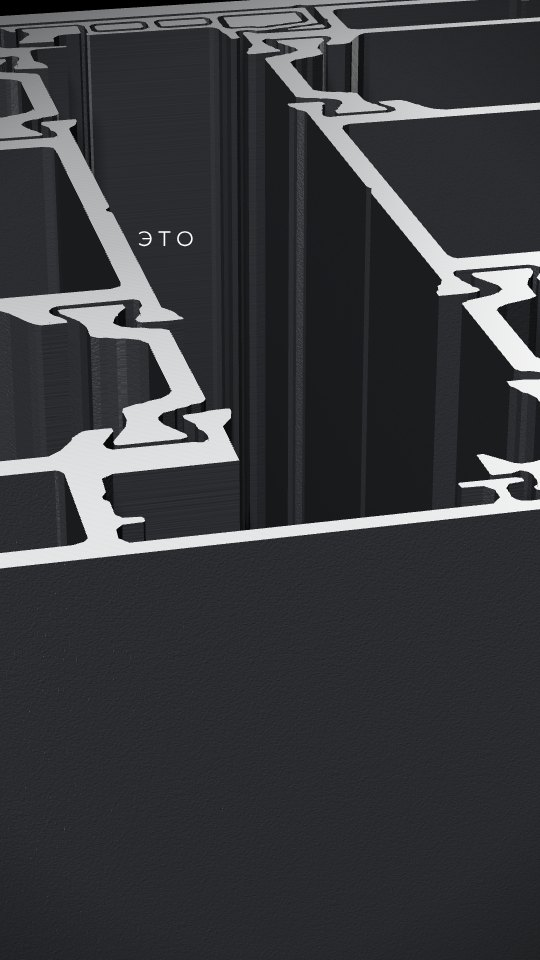

План 10,00–0,500,50 сэкстремальное макро · 3D
Материал3D-профиль VIKING 90 из чертежа: пазы и стенки торца крупно
Графика и текст«Это»появляется на 0,30 с, слева сверху
АнимацияБоковой проезд камеры, по торцу проходит узкий блик. Кадр проявляется из чёрного за 0,15 с
ЗвукМягкий низкий удар на 0,00 · металлический блеск на блике · тик слова